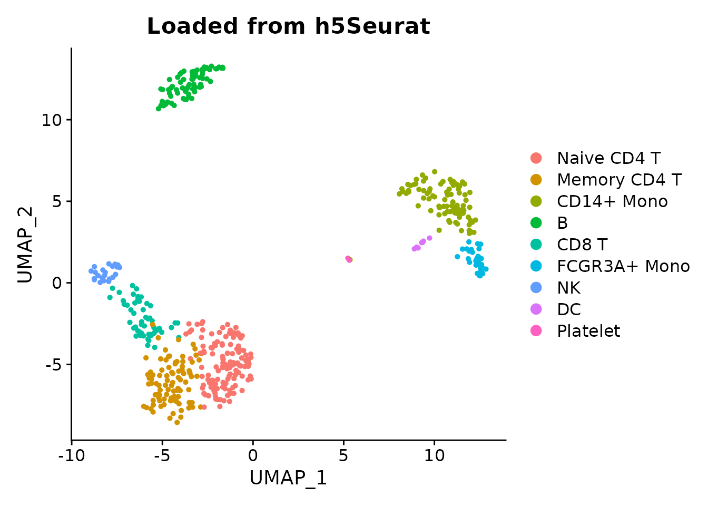

Overview
h5Seurat is the native HDF5 format for Seurat objects. It stores all
components – expression matrices, metadata, reductions, graphs, and
spatial data – in a single .h5Seurat file. This vignette
provides a quick example followed by the format specification.
Quick example
obj <- readRDS(system.file("extdata", "pbmc_demo.rds", package = "scConvert"))
h5s_path <- tempfile(fileext = ".h5Seurat")
writeH5Seurat(obj, h5s_path, overwrite = TRUE, verbose = FALSE)
obj_loaded <- readH5Seurat(h5s_path, verbose = FALSE)
#> Validating h5Seurat file
#> Warning: Adding a command log without an assay associated with it
#> Adding a command log without an assay associated with it
cat("Cells:", ncol(obj_loaded), "| Genes:", nrow(obj_loaded), "\n")
#> Cells: 500 | Genes: 2000
cat("Assays:", paste(names(obj_loaded@assays), collapse = ", "), "\n")
#> Assays: RNA
cat("Reductions:", paste(names(obj_loaded@reductions), collapse = ", "), "\n")
#> Reductions: pca, umap
DimPlot(obj_loaded, reduction = "umap", group.by = "seurat_annotations") +
ggplot2::ggtitle("Loaded from h5Seurat")
Top-level structure
Every h5Seurat file has the following layout:
| Entry | Type | Required | Description |
|---|---|---|---|
cell.names |
Dataset (string) | Yes | Cell barcodes, length = n_cells |
meta.data |
Group or dataset | Yes | Cell-level metadata (data frame) |
assays/ |
Group | Yes | One sub-group per assay |
reductions/ |
Group | Yes | One sub-group per reduction |
graphs/ |
Group | Yes | One sub-group per neighbor graph |
images/ |
Group | No | Spatial image data (Visium, etc.) |
misc/ |
Group | Yes | Miscellaneous data (list) |
tools/ |
Group | Yes | Tool-specific results (list) |
commands/ |
Group | No | Command log |
Required attributes on the root group:
| Attribute | Type | Description |
|---|---|---|
project |
String | Seurat project name |
active.assay |
String | Default assay name (must exist in assays/) |
version |
String | Seurat version |
Assay layout
Each assay is stored under assays/{name}/:
| Entry | Type | Required | Description |
|---|---|---|---|
features |
Dataset (string) | Yes | Gene/feature names |
data |
Sparse group or dense dataset | Yes | Log-normalized expression (genes x cells) |
counts |
Sparse group or dense dataset | No | Raw UMI counts |
scale.data |
Dense dataset | No | Scaled expression (variable features x cells) |
scaled.features |
Dataset (string) | No | Feature names for scale.data |
variable.features |
Dataset (string) | No | Highly variable feature names |
meta.features |
Group or dataset | No | Feature-level metadata (data frame) |
misc |
Group | No | Additional assay data |
Required attribute: key (string) – the
assay key prefix (e.g., "rna_").
Seurat v5 Assay5 objects are automatically converted to
this layout, with layers stored as separate matrices.
Reductions layout
Each reduction is stored under reductions/{name}/:
| Entry | Type | Required | Description |
|---|---|---|---|
cell.embeddings |
Dense dataset | Yes | Embedding matrix (n_cells x n_components) |
feature.loadings |
Dense dataset | No | Gene loadings (PCA only) |
feature.loadings.projected |
Dense dataset | No | Projected loadings |
misc |
Group | No | Additional data |
Required attributes: active.assay
(string), key (string), global (logical).
Graphs layout
Each graph is stored under graphs/{name}/ as a sparse
matrix group:
| Entry | Type | Description |
|---|---|---|
data |
Dataset | Non-zero edge weights |
indices |
Dataset (int) | 0-based row indices |
indptr |
Dataset (int) | Column pointers (length = n_cells + 1) |
Required attribute: dims (2 integers) –
matrix dimensions. Optional attribute:
assay.used (string).
Common data types
Sparse matrices
Stored as CSC (compressed sparse column) with three datasets:
data, indices, indptr. This
matches the dgCMatrix layout in R. The dims
attribute records (n_rows, n_cols).
Factors
Stored as a group with two datasets:
-
levels– string dataset of unique levels -
values– integer dataset of 1-based level indices
This avoids HDF5 enum types, which are not supported by all HDF5 implementations.
Data frames
Stored as either:
- Dataset – compound HDF5 dataset (when no factors are present)
- Group – one dataset per column, with factors as sub-groups
Group-based data frames may include a colnames attribute
for column ordering and a row.names dataset.